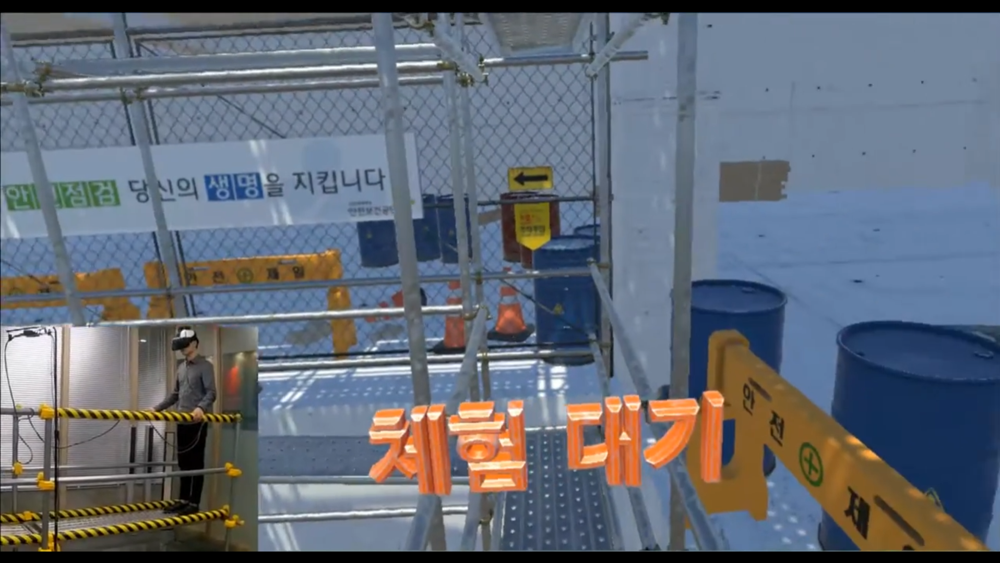

LG-Haus 안전체험
전기·가스 사고 시나리오 훈련 시뮬레이터.
naval · construction · factory · multi-unit
함정·건설·공장 안전 교육 맥락의 훈련 시뮬레이터 묶음. Samsung · LG · POSCO 안전체험관 납품. 듀얼 액시스 비계 장치까지 직접 설계해 개발·납품을 가능하게 만든 4 차례의 시뮬레이터 설치 · 운영 · 철수 사이클.
전기·가스 사고 시나리오 훈련 시뮬레이터.

사고 직후 대응 절차 훈련.

정기 유지보수 절차 시뮬레이션.

대형 설비 운전 인터페이스 훈련.

건설 비계 작업 훈련. 듀얼 액시스 비계 장치 하드웨어 직접 설계.

고소 작업 추락 위험 인지 훈련.

작업 대기·동선 안전 훈련.

함정 콕핏 시뮬레이터. 하드웨어와 Unity 입력 동기, 운영자 안전 로직 책임.

조종 인터페이스 훈련.
VR 안에서 비계를 흔들고 추락 위험을 인지시키려면 실제로 흔들리는 발판이 필요했습니다. 듀얼 액시스 비계 장치는 그 요구를 충족시키기 위해 직접 설계·제작한 하드웨어입니다.
이후 Samsung·LG·POSCO 안전체험관에 시뮬레이터와 함께 동반 납품. 소프트웨어 + 하드웨어 + 운영 일체를 책임지는 납품 단위 작업 방식이 여기서 정립됨.